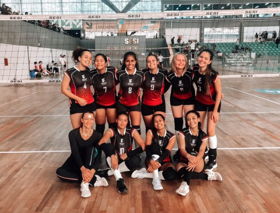

JIFC 2022
Representantes do IFC no Vôlei Femenino
Depoimento de Amanda Vincenzi (3INFO3)
"Foi uma experiência incrivél, algo que nunca havia vivido antes.
Na ida até lá fomos de ônibus, meninas em um e meninos em outro. O local dos jogos esse ano foi em Blumenau, especificamente no SESI, que por sinal foi um lugar perfeito para os jogos, o estadio era enorme, a comida e o a parte dos quartos também eram muito bons.
Amo jogar vôlei e etar lá representando o IFC foi maravilhoso."
Texto fictíocio, com apenas algumas palavras de Amanda